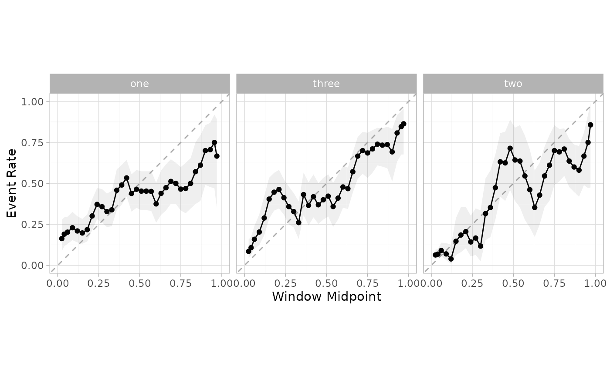
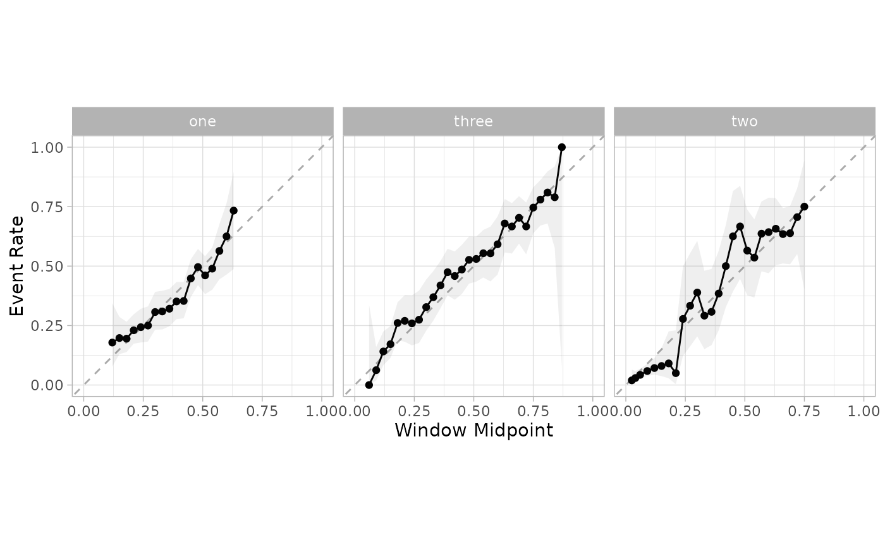

Uses a Multinomial calibration model to calculate new probabilities
Source:R/cal-estimate-multinom.R
cal_estimate_multinomial.RdUses a Multinomial calibration model to calculate new probabilities
Usage
cal_estimate_multinomial(
.data,
truth = NULL,
estimate = dplyr::starts_with(".pred_"),
smooth = TRUE,
parameters = NULL,
...
)
# S3 method for data.frame
cal_estimate_multinomial(
.data,
truth = NULL,
estimate = dplyr::starts_with(".pred_"),
smooth = TRUE,
parameters = NULL,
...,
group = NULL
)
# S3 method for tune_results
cal_estimate_multinomial(
.data,
truth = NULL,
estimate = dplyr::starts_with(".pred_"),
smooth = TRUE,
parameters = NULL,
...
)
# S3 method for grouped_df
cal_estimate_multinomial(
.data,
truth = NULL,
estimate = NULL,
smooth = TRUE,
parameters = NULL,
...
)Arguments
- .data
An ungrouped
data.frameobject, ortune_resultsobject, that contains predictions and probability columns.- truth
The column identifier for the true class results (that is a factor). This should be an unquoted column name.
- estimate
A vector of column identifiers, or one of
dplyrselector functions to choose which variables contains the class probabilities. It defaults to the prefix used by tidymodels (.pred_). The order of the identifiers will be considered the same as the order of the levels of thetruthvariable.- smooth
Applies to the logistic models. It switches between logistic spline when
TRUE, and simple logistic regression whenFALSE.- parameters
(Optional) An optional tibble of tuning parameter values that can be used to filter the predicted values before processing. Applies only to
tune_resultsobjects.- ...
Additional arguments passed to the models or routines used to calculate the new probabilities.
- group
The column identifier for the grouping variable. This should be one or more unquoted column name. Default to
NULL. Whengroup = NULLno grouping will take place.
Details
When smooth = FALSE, nnet::multinom() function is used to estimate the
model, otherwise mgcv::gam() is used.
Examples
library(modeldata)
library(parsnip)
library(dplyr)
f <-
list(
~ -0.5 + 0.6 * abs(A),
~ ifelse(A > 0 & B > 0, 1.0 + 0.2 * A / B, -2),
~ -0.6 * A + 0.50 * B - A * B
)
set.seed(1)
tr_dat <- sim_multinomial(500, eqn_1 = f[[1]], eqn_2 = f[[2]], eqn_3 = f[[3]])
cal_dat <- sim_multinomial(500, eqn_1 = f[[1]], eqn_2 = f[[2]], eqn_3 = f[[3]])
te_dat <- sim_multinomial(500, eqn_1 = f[[1]], eqn_2 = f[[2]], eqn_3 = f[[3]])
set.seed(2)
rf_fit <-
rand_forest() %>%
set_mode("classification") %>%
set_engine("randomForest") %>%
fit(class ~ ., data = tr_dat)
cal_pred <-
predict(rf_fit, cal_dat, type = "prob") %>%
bind_cols(cal_dat)
te_pred <-
predict(rf_fit, te_dat, type = "prob") %>%
bind_cols(te_dat)
cal_plot_windowed(cal_pred, truth = class, window_size = 0.1, step_size = 0.03)

smoothed_mn <- cal_estimate_multinomial(cal_pred, truth = class)
new_test_pred <- cal_apply(te_pred, smoothed_mn)
cal_plot_windowed(new_test_pred, truth = class, window_size = 0.1, step_size = 0.03)
